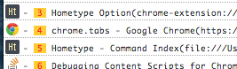
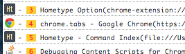

| 履歴 | フォーム | その他 | |
|---|---|---|---|
| backHistory | focusFirstInput | noop | |
| forwardHistory | focusLastInput |
j と C-e
下方向にスクロールします。スクロール量はオプションページの "Amount of scrolling" で変更することができます。デフォルトは50pxです。
C-d
画面半分だけ下方向にスクロールします。
C-f
1画面分だけ下方向にスクロールします。
k と C-y
上方向にスクロールします。スクロール量はオプションページの "Amount of scrolling" で変更することができます。デフォルトは50pxです。
C-u
画面半分だけ上方向にスクロールします。
C-b
1画面分だけ上方向にスクロールします。
gg
ページの一番上までスクロールします。
G
ページの一番下までスクロールします。
x
現在のタブを閉じます。
C-p
現在のタブのひとつ左側のタブを選択します。
C-n
現在のタブのひとつ右側のタブを選択します。
u
一番最後に閉じたタブを開き直します。ただし、履歴は残っていません。
m
 

Google Chrome で開いているタブを検索して、選択したいタブを選択することが出来ます。このコマンドが実行されると、Hometype は各タブのタイトルの先頭に1文字つけます。その1文字をタイプすることによって目的のタブを選択することができます。文字は大文字と小文字を区別します。もしマッチする文字がなければ、タブの一覧がタブのタイトル及び URL からフィルタされます。
C-n (コマンドモードの場合のみ)
コマンドモードで検索結果が複数ある場合に、候補を選択することができます。たとえば、searchBookmarksを使ってブラウザのブックマークを検索している時に複数の候補がヒットした場合、どのブックマークを開くのかを選ぶ必要がありますが、そういう時にこのコマンドを使って候補を選択することができます。
C-p (コマンドモードの場合のみ)
概要はselectNextCandidateと同じで、候補を移動する方向が違うだけです。
U
今までに閉じられたタブを検索して、もう一度開くことができます。コマンドバーにテキストを入力すると、ページのタイトル及びURLから検索します。検索は大文字と小文字を区別しません。開き直したタブは履歴をもっていないので、履歴を戻ったり進んだりすることができません。最大で20個の閉じたタブを保持しています。
b または B
Google Chromeに保存されているブックマークを検索して、開くことができます。コマンドバーにテキストを入力すると、ブックマークのタイトル及びURLから検索します。検索は大文字と小文字を区別しません。
b はデフォルトで現在のページでブックマークが開かれます。B は --new オプション付きで実行されるので、新しいページでブックマークが開かれます。
C-h
現在のタブの履歴を検索して、戻ったり進んだりすることができます。コマンドバーにテキストを入力すると、履歴ページのタイトル及びURLから検索します。検索は大文字と小文字を区別しません。
o
Google Chromeにインストールされているアプリを検索して、起動させることができます。コマンドバーにテキストを入力すると、アプリケーションの名前及びURLから検索します。検索は大文字と小文字を区別しません。
f または cf または F または cF

このコマンドを実行すると、Hometypeはヒントモードへ移行してヒントキーをもったヒントチップが各リンク要素及びフォーム要素に対して表示されます。ヒントキーを押下することで、リンクを辿ったりフォームにフォーカスしたりすることができます。ヒントキーは大文字と小文字を区別します。
また、ヒントモードでは、要素に含まれるテキストを検索してヒントを絞り込むことができます。ヒントを絞り込むには、ヒントキーに存在しないキーを押下して検索を始める必要があります。たとえばヒントキーが小文字の場合は大文字の単語を入力して検索してください。また逆にヒントキーが大文字の場合は小文字の単語を入力して検索してください。すると画面下部にコマンドバーが表示され、マッチしたテキストがハイライトされます。検索は大文字と小文字を区別しません。
Hometypeでは辞書データを持っており、日本語の文字列にマッチすることもできます。たとえばリンクに "愛" という単語が含まれていた場合、ローマ字で"ai" (もしくは"AI") と入力することで "愛" にマッチすることができます。
f は現在のタブでリンクを開きます。cf は --continuous オプション付きでコマンドを実行します。F は --new オプション付きで実行し、cF は --new と --continuous オプションを付けて実行されます。
v
このコマンドを実行すると、ヒントモードへ移行します(ヒントチップは赤色)。ヒントキーを押下すると、その要素に対してフォーカスします。このコマンドは例えば、コードスニペットを選択してコピーしたい時などに役立ちます。フォーカスした要素の編集はできません。
:
コマンドバーが画面下部に表示され、そこに実行したいコマンドを入力すれば、そのコマンドが実行されます。
i と a
Hometypeは、たまに現在のモードの検出を間違えてしまうことがあります。たとえば、テキスト要素に対してフォーカスをしているにも関わらず、ノーマルモードのままになっていることがあります。そのような場合にこのコマンドを実行することで、強制的にインサートモードに移行させることができます。
Esc (ノーマルモード以外の場合)
ノーマルモードに戻ります。
H
履歴を1つ前に戻ります。
L
履歴を1つ先に進みます。
I
画面上に最初に現れるフォーム要素にフォーカスします。
A
画面上に最後に現れるフォーム要素にフォーカスします。
このコマンドはなにもしません。デフォルトのキーバインドを削除するために使って下さい。